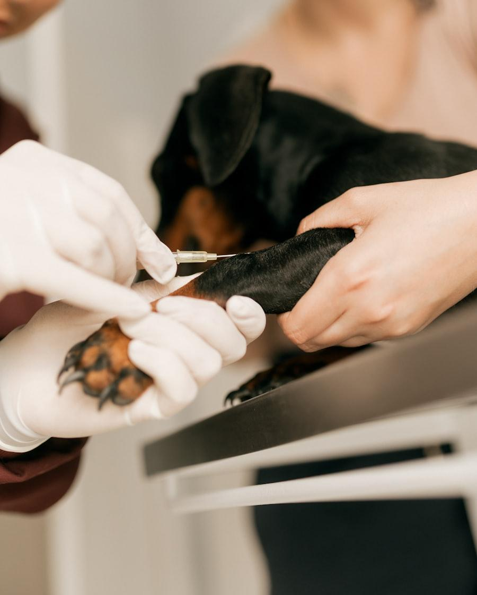

Revisión antes de vacunar
Nunca vacunamos sin explorar. Un animal con fiebre, inmunodeprimido o incubando algo no debe recibir una vacuna ese día: la respuesta sería peor y podríamos enmascarar un problema.
Calendario adaptado a la edad, la raza y la vida real de tu animal. Te avisamos nosotros cuando toca; no tienes que acordarte.

Cómo lo hacemos
Nunca vacunamos sin explorar. Un animal con fiebre, inmunodeprimido o incubando algo no debe recibir una vacuna ese día: la respuesta sería peor y podríamos enmascarar un problema.
No es lo mismo un gato que no sale de casa que uno con acceso al exterior, ni un perro de ciudad que uno que va al campo o viaja. Vacunamos contra lo que tu animal puede encontrarse de verdad.
Interna y externa, con la frecuencia que corresponda a su vida y a la época del año. En Madrid el control de flebotomos, vector de la leishmaniosis, merece atención especial en los meses cálidos.
Al salir queda registrada la próxima fecha y te avisamos cuando se acerca. Es nuestro trabajo recordarlo, no el tuyo.
La primovacunación se hace por fases durante las primeras semanas, porque los anticuerpos que reciben de la madre interfieren con la vacuna hasta cierta edad. Es también el momento de hablar de socialización, alimentación y del microchip.
Una revisión anual con actualización de vacunas. En animales sanos suele ser una visita corta, y sirve sobre todo para detectar a tiempo cambios de peso, soplos, bultos o problemas dentales.
A partir de los siete años (antes en razas grandes) recomendamos dos revisiones al año y una analítica anual. La enfermedad renal, el hipertiroidismo felino o la artrosis dan la cara tarde, y detectarlos pronto cambia mucho el pronóstico.
El sobrepeso acorta la vida y agrava casi todo lo demás: articulaciones, corazón, diabetes, riesgo anestésico. Si tu animal está por encima de su peso ideal te lo diremos, con una pauta concreta y controles de seguimiento. No es una regañina: es probablemente lo más eficaz que podemos hacer por él.
Preguntas
Sí, aunque menos. Algunos virus entran en casa en la ropa o el calzado, y la situación cambia si en algún momento se escapa, viaja o convive con otro gato. Ajustamos el calendario a su caso real.
Llámanos. Según cuánto tiempo haya pasado y de qué vacuna se trate, a veces basta con una dosis y otras hay que reiniciar la pauta. No lo dejes por vergüenza: es muy habitual.
Es poco frecuente. Lo normal es algo de decaimiento o molestia en el punto del pinchazo durante 24 o 48 horas. Si aparece hinchazón facial, vómitos o dificultad respiratoria, llámanos de inmediato.
Otros servicios
Dinos su nombre y lo miramos en su ficha. Si le toca, lo dejamos citado en la misma llamada.